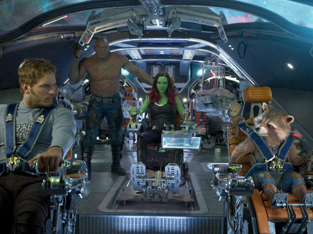

Guardians Of Galaxy

Look to the Walkman for the wisdom.
"Your mommy's alright, your daddy's alright," promise the Cheap Trick vocals from their smashing anthem Surrender, the song that closes out Guardians Of The Galaxy Volume 2 with a line that, in context, seems like severe understatement: "They just seem a little weird." You don't say. Daddy issues have long been a staple of intergalactic storytelling, but things are noticeably nuttier in this film where many a father and father-figure is brought to task. At one point when a character wonders whether he should chase after the charismatic silver-fox claiming to be his father, another asks him that most eternal of questions: "What if this man is your Hasselhoff?"
What, indeed.
I'd loved the first Guardians Of The Galaxy, an eye-popping and irreverent treat, a stunning and stupendously silly space opera: Star Wars made for those who prefer a Deadpool to a Darth Vader. Featuring a non-star quintet of obscure comic book outcasts, director James Gunn had the elbow room to make things messy, mischievous and genuinely weird, and this time he subverts things even further: In Vol 2, for instance, we realise that every major character has a truly messed-up (and genuinely horrifying) backstory, and they've earned the right to be - as Cheap Trick sang - "a little weird."